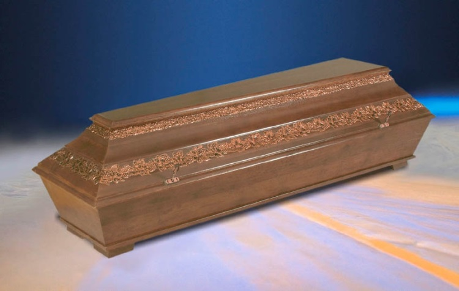
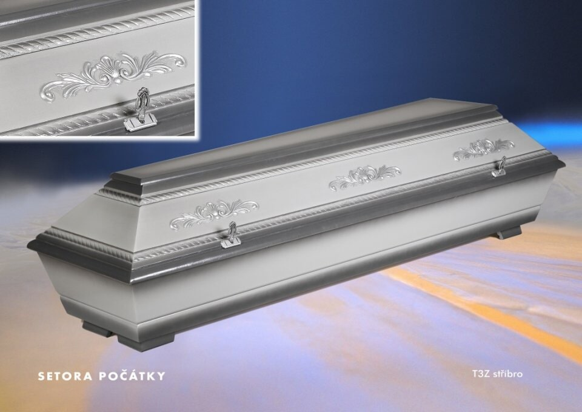

Rakev z dubového dřeva
Cena: 20 000 Kč
Barva: hnědá
Dub je jedním z nejpevnějších a nejodolnějších materiálů používaných při výrobě rakví. Pokud hledáte něco, co vydrží dlouhé roky a bude působit majestátně, dubová rakev je ideální volbou.

Rakev z smrkového dřeva
Cena: 15 000 Kč
Barva: hnědá
Smrk je tradičním a přírodním materiálem, který se často používá pro výrobu rakví. Smrkové dřevo je lehčí a má příjemnou, přirozenou barvu, která navozuje pocit klidu a jednoduchosti.

Rakev z oceli
Cena: 25 000 Kč
Barva: stříbrná
Ocelové rakve jsou známé svou odolností a vysokou ochranou. Jsou velmi pevné a schopné odolávat různým vnějším vlivům, což z nich činí ideální volbu pro náročnější podmínky.